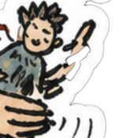

姿态 · 坐着，手在桌下
雨落天庆馆
第一幕 / 七幕场景占位 · 可替换为天庆馆插画
谁在看戏，谁在看人
第二幕 / 七幕袖中捏泥
第三幕 / 七幕第一步 · 揉泥
把手里的泥团揉圆
泥团与泥像为 CSS 交互占位，可替换为三张实物步骤图。


泥像亮相
第四幕 / 七幕
泥像局部 · 来自现有插画裁切
一排泥像
第五幕 / 七幕沿街浏览
向左或向右移动视野
每个摊位都能点击。留意泥像数量的变化，也留意那张纸条。
不吵，也有回声
第六幕 / 七幕泥
当前只展示你提供的设计文档中明确出现的摘引和场景转述。 完整原著正文需在取得授权并核对版本后加入故事数据文件。
你看见了什么
第七幕 / 七幕内容仅保存在当前浏览器。